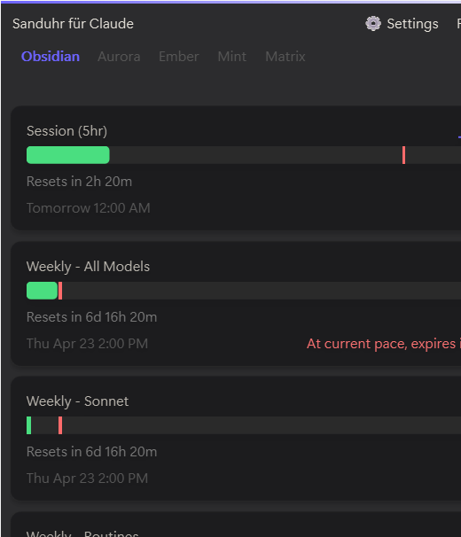
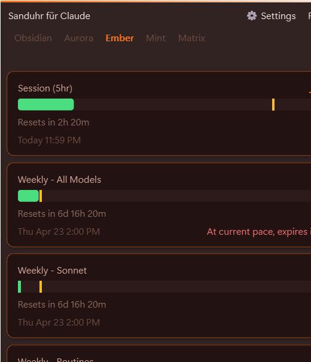
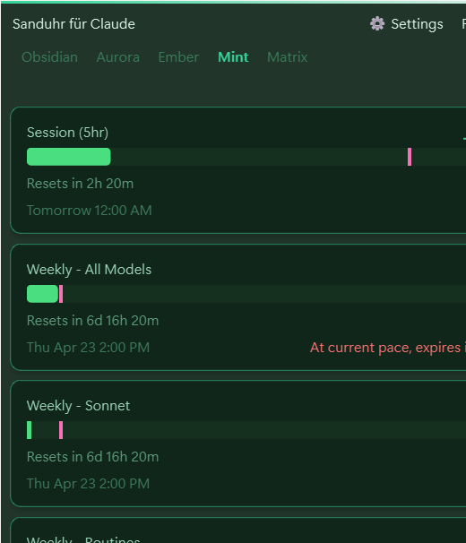
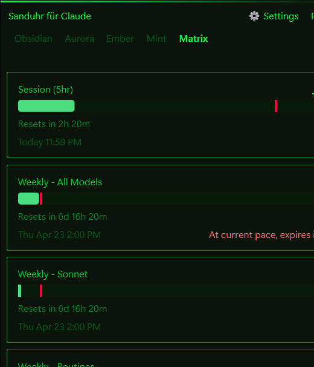

🗺️ Vibe Cartographer
Plot your course from idea to shipped app.
A Claude Code plugin for vibe coding with purpose and direction — 11 slash commands walk you from onboarding through reflection, with self-evolving memory built in.


A native desktop widget for Windows 11 and macOS that turns your Claude subscription usage into something you can actually pace yourself by — burn rate, pace ghost, horizon sparklines, a deep-work hourglass timer, a cooldown snake game, and five hand-tuned glass themes on both platforms.
Independent third-party tool. Not affiliated with Anthropic. Requires an active Claude Pro, Team, or Enterprise subscription.
Ships for Windows 11 and macOS. A legacy Python script covers everything else.
Claude.ai’s own usage page tells you what you’ve used. Sanduhr tells you whether that’s a problem yet — and does it natively on Windows 11 and macOS.
“You’ll hit your weekly cap in ~4h 22m at current pace.” Know before you run dry.
A thin tick on every bar shows where pace says usage should be right now. Real fill sits to the left (under pace) or right (ahead) — pace by eye, no math.
Heer/Tufte 4-band stacked horizon of your last 2 hours. Peaks accumulate into dense dark regions, lulls wash soft. Denser information than a line chart, same pixel budget.
Swap the tier cards for a digitised 31×31 pixel hourglass that drains in real time. Inline minute picker, zero external dependencies.
Pure-Qt/pure-SwiftUI snake for when you’ve blown through your budget and need to kill a few minutes. Persistent high score.
Bars pulse subliminally toward each theme’s accent color. The widget feels alive at rest; the effect is deliberately below the threshold of flicker.
Hover any edge or corner, cursor changes, click-drag. Minimum bounds track your font metrics so text never clips. New geometry persists across launches.
Drop a JSON palette into %APPDATA%\Sanduhr\themes\ or paste one into Settings.
Hand any LLM a reference image or vibe description and get back a drop-in theme file.
Win11 Mica via DWM on Windows (solid-color fallback on Win10); NSVisualEffectView vibrancy on macOS. No Electron, no webview.
Session key lives in Windows Credential Manager (service com.626labs.sanduhr) or macOS Keychain — same service name on both, cleared on uninstall, never plaintext.
Mac build ships Developer ID signed + notarized with Sparkle auto-update. No manual re-downloads. Windows Store release is in review.
No analytics, no crash reporting, no ads, no SDK-phones-home. One outbound destination: claude.ai, using your own cookie.
Drag the widget from any point, not just the title bar. Double-click title to compact. Right-click for menu.
Each theme has its own glass-stacking recipe: Obsidian is densest, Mint is airiest, Matrix opts out of Mica for a pure phosphor-on-black terminal look with Cascadia Code numerics.





The whole project is public. Here are the load-bearing documents.
Open-source plugins for shipping with AI.
Plot your course from idea to shipped app.
A Claude Code plugin for vibe coding with purpose and direction — 11 slash commands walk you from onboarding through reflection, with self-evolving memory built in.
Close the documentation vacuum.
AI-powered documentation gap analyzer. Scans your codebase, classifies what you’ve built, and generates the ADRs, runbooks, threat models, and specs you’re missing.


Tests that match what your app actually does.
Reads a vibe-coded app, classifies its maturity tier, and generates the tests it genuinely needs — smoke, behavioral, edge, integration, performance — proportional to deployment risk.
Fix the AI-prototyped security gaps.
Security scanner for vibe-coded apps. Detects the predictable gaps AI prototyping leaves behind — secrets, auth, input validation, dependencies — and generates fixes proportional to your app’s deployment context.